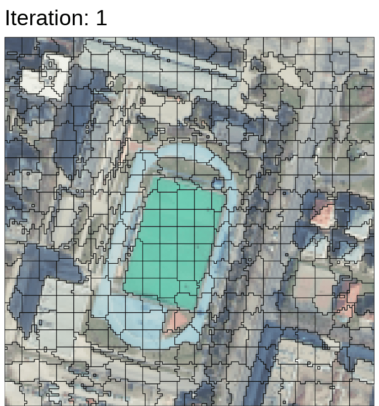
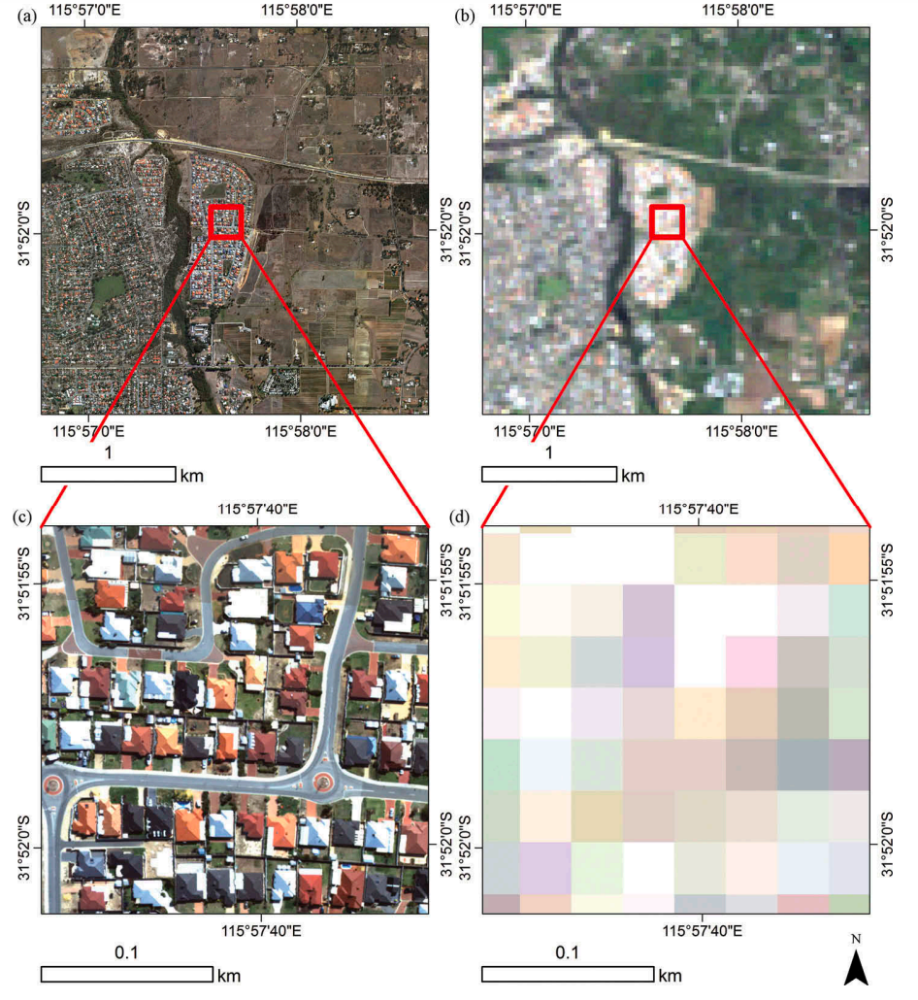
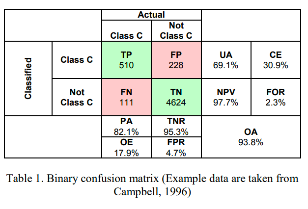
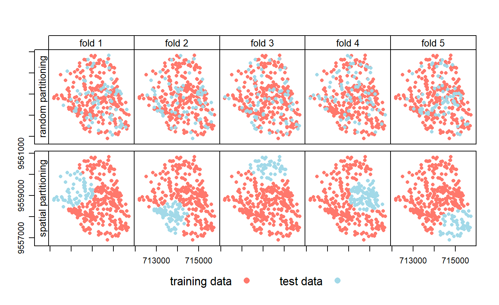

<!DOCTYPE html>
<html xmlns="http://www.w3.org/1999/xhtml" lang="en" xml:lang="en"><head>

<meta charset="utf-8">
<meta name="generator" content="quarto-1.2.269">

<meta name="viewport" content="width=device-width, initial-scale=1.0, user-scalable=yes">

<meta name="author" content="Sohyun Park">

<title>RS notebook - 7&nbsp; Classification2</title>
<style>
code{white-space: pre-wrap;}
span.smallcaps{font-variant: small-caps;}
div.columns{display: flex; gap: min(4vw, 1.5em);}
div.column{flex: auto; overflow-x: auto;}
div.hanging-indent{margin-left: 1.5em; text-indent: -1.5em;}
ul.task-list{list-style: none;}
ul.task-list li input[type="checkbox"] {
  width: 0.8em;
  margin: 0 0.8em 0.2em -1.6em;
  vertical-align: middle;
}
</style>


<script src="site_libs/quarto-nav/quarto-nav.js"></script>
<script src="site_libs/quarto-nav/headroom.min.js"></script>
<script src="site_libs/clipboard/clipboard.min.js"></script>
<script src="site_libs/quarto-search/autocomplete.umd.js"></script>
<script src="site_libs/quarto-search/fuse.min.js"></script>
<script src="site_libs/quarto-search/quarto-search.js"></script>
<meta name="quarto:offset" content="./">
<link href="./week8.html" rel="next">
<link href="./week6.html" rel="prev">
<script src="site_libs/quarto-html/quarto.js"></script>
<script src="site_libs/quarto-html/popper.min.js"></script>
<script src="site_libs/quarto-html/tippy.umd.min.js"></script>
<script src="site_libs/quarto-html/anchor.min.js"></script>
<link href="site_libs/quarto-html/tippy.css" rel="stylesheet">
<link href="site_libs/quarto-html/quarto-syntax-highlighting.css" rel="stylesheet" id="quarto-text-highlighting-styles">
<script src="site_libs/bootstrap/bootstrap.min.js"></script>
<link href="site_libs/bootstrap/bootstrap-icons.css" rel="stylesheet">
<link href="site_libs/bootstrap/bootstrap.min.css" rel="stylesheet" id="quarto-bootstrap" data-mode="light">
<script id="quarto-search-options" type="application/json">{
  "location": "sidebar",
  "copy-button": false,
  "collapse-after": 3,
  "panel-placement": "start",
  "type": "textbox",
  "limit": 20,
  "language": {
    "search-no-results-text": "No results",
    "search-matching-documents-text": "matching documents",
    "search-copy-link-title": "Copy link to search",
    "search-hide-matches-text": "Hide additional matches",
    "search-more-match-text": "more match in this document",
    "search-more-matches-text": "more matches in this document",
    "search-clear-button-title": "Clear",
    "search-detached-cancel-button-title": "Cancel",
    "search-submit-button-title": "Submit"
  }
}</script>


</head>

<body class="nav-sidebar floating">

<div id="quarto-search-results"></div>
  <header id="quarto-header" class="headroom fixed-top">
  <nav class="quarto-secondary-nav" data-bs-toggle="collapse" data-bs-target="#quarto-sidebar" aria-controls="quarto-sidebar" aria-expanded="false" aria-label="Toggle sidebar navigation" onclick="if (window.quartoToggleHeadroom) { window.quartoToggleHeadroom(); }">
    <div class="container-fluid d-flex justify-content-between">
      <h1 class="quarto-secondary-nav-title"><span class="chapter-number">7</span>&nbsp; <span class="chapter-title">Classification2</span></h1>
      <button type="button" class="quarto-btn-toggle btn" aria-label="Show secondary navigation">
        <i class="bi bi-chevron-right"></i>
      </button>
    </div>
  </nav>
</header>
<!-- content -->
<div id="quarto-content" class="quarto-container page-columns page-rows-contents page-layout-article">
<!-- sidebar -->
  <nav id="quarto-sidebar" class="sidebar collapse sidebar-navigation floating overflow-auto">
    <div class="pt-lg-2 mt-2 text-left sidebar-header">
    <div class="sidebar-title mb-0 py-0">
      <a href="./">RS notebook</a> 
    </div>
      </div>
      <div class="mt-2 flex-shrink-0 align-items-center">
        <div class="sidebar-search">
        <div id="quarto-search" class="" title="Search"></div>
        </div>
      </div>
    <div class="sidebar-menu-container"> 
    <ul class="list-unstyled mt-1">
        <li class="sidebar-item">
  <div class="sidebar-item-container"> 
  <a href="./index.html" class="sidebar-item-text sidebar-link">Hello!</a>
  </div>
</li>
        <li class="sidebar-item">
  <div class="sidebar-item-container"> 
  <a href="./week1.html" class="sidebar-item-text sidebar-link"><span class="chapter-number">1</span>&nbsp; <span class="chapter-title">Introduction to Remote Sensing</span></a>
  </div>
</li>
        <li class="sidebar-item">
  <div class="sidebar-item-container"> 
  <a href="./week2.html" class="sidebar-item-text sidebar-link"><span class="chapter-number">2</span>&nbsp; <span class="chapter-title">Portfolio tools</span></a>
  </div>
</li>
        <li class="sidebar-item">
  <div class="sidebar-item-container"> 
  <a href="./week3.html" class="sidebar-item-text sidebar-link"><span class="chapter-number">3</span>&nbsp; <span class="chapter-title">Remote sensing data</span></a>
  </div>
</li>
        <li class="sidebar-item">
  <div class="sidebar-item-container"> 
  <a href="./week4.html" class="sidebar-item-text sidebar-link"><span class="chapter-number">4</span>&nbsp; <span class="chapter-title">Policy applications</span></a>
  </div>
</li>
        <li class="sidebar-item">
  <div class="sidebar-item-container"> 
  <a href="./week5.html" class="sidebar-item-text sidebar-link"><span class="chapter-number">5</span>&nbsp; <span class="chapter-title">Introduction to Google Earth Engine</span></a>
  </div>
</li>
        <li class="sidebar-item">
  <div class="sidebar-item-container"> 
  <a href="./week6.html" class="sidebar-item-text sidebar-link"><span class="chapter-number">6</span>&nbsp; <span class="chapter-title">Classification1</span></a>
  </div>
</li>
        <li class="sidebar-item">
  <div class="sidebar-item-container"> 
  <a href="./week7.html" class="sidebar-item-text sidebar-link active"><span class="chapter-number">7</span>&nbsp; <span class="chapter-title">Classification2</span></a>
  </div>
</li>
        <li class="sidebar-item">
  <div class="sidebar-item-container"> 
  <a href="./week8.html" class="sidebar-item-text sidebar-link"><span class="chapter-number">8</span>&nbsp; <span class="chapter-title">Temperature and policy</span></a>
  </div>
</li>
        <li class="sidebar-item">
  <div class="sidebar-item-container"> 
  <a href="./references.html" class="sidebar-item-text sidebar-link">References</a>
  </div>
</li>
    </ul>
    </div>
</nav>
<!-- margin-sidebar -->
    <div id="quarto-margin-sidebar" class="sidebar margin-sidebar">
        <nav id="TOC" role="doc-toc" class="toc-active">
    <h2 id="toc-title">Table of contents</h2>
   
  <ul>
  <li><a href="#summary" id="toc-summary" class="nav-link active" data-scroll-target="#summary"><span class="toc-section-number">7.1</span>  Summary</a>
  <ul class="collapse">
  <li><a href="#object-based-image-analysisobia" id="toc-object-based-image-analysisobia" class="nav-link" data-scroll-target="#object-based-image-analysisobia"><span class="toc-section-number">7.1.1</span>  Object-based image analysis(OBIA)</a></li>
  <li><a href="#sub-pixel-classificationspectral-mixture-analysis-sma-linear-spectral-unmixing" id="toc-sub-pixel-classificationspectral-mixture-analysis-sma-linear-spectral-unmixing" class="nav-link" data-scroll-target="#sub-pixel-classificationspectral-mixture-analysis-sma-linear-spectral-unmixing"><span class="toc-section-number">7.1.2</span>  Sub pixel classification(Spectral Mixture Analysis (SMA)/ Linear spectral unmixing)</a></li>
  <li><a href="#accuracy-assessment" id="toc-accuracy-assessment" class="nav-link" data-scroll-target="#accuracy-assessment"><span class="toc-section-number">7.1.3</span>  Accuracy assessment</a></li>
  <li><a href="#spatial-cross-validation" id="toc-spatial-cross-validation" class="nav-link" data-scroll-target="#spatial-cross-validation"><span class="toc-section-number">7.1.4</span>  Spatial cross validation</a></li>
  </ul></li>
  <li><a href="#applications" id="toc-applications" class="nav-link" data-scroll-target="#applications"><span class="toc-section-number">7.2</span>  Applications</a></li>
  <li><a href="#personal-reflection" id="toc-personal-reflection" class="nav-link" data-scroll-target="#personal-reflection"><span class="toc-section-number">7.3</span>  Personal Reflection</a></li>
  </ul>
</nav>
    </div>
<!-- main -->
<main class="content" id="quarto-document-content">

<header id="title-block-header" class="quarto-title-block default">
<div class="quarto-title">
<h1 class="title d-none d-lg-block"><span class="chapter-number">7</span>&nbsp; <span class="chapter-title">Classification2</span></h1>
</div>


<div class="quarto-title-meta">

    <div>
    <div class="quarto-title-meta-heading">Author</div>
    <div class="quarto-title-meta-contents">
             <p>Sohyun Park </p>
          </div>
  </div>
    
  
    
  </div>
  

</header>

<section id="summary" class="level2" data-number="7.1">
<h2 data-number="7.1" class="anchored" data-anchor-id="summary"><span class="header-section-number">7.1</span> Summary</h2>
<p>This week covered more classification methods, how to assess accuracy of classifers and importance of accounting for spatial dependence in classifiers.</p>
<section id="object-based-image-analysisobia" class="level3" data-number="7.1.1">
<h3 data-number="7.1.1" class="anchored" data-anchor-id="object-based-image-analysisobia"><span class="header-section-number">7.1.1</span> Object-based image analysis(OBIA)</h3>
<ul>
<li><p>Simple Linear Iterative Clustering (SLIC) Algorithm = the most common method for superpixel generation</p></li>
<li><p>Supercells are consider shapes (rather than cells) based on the homogeneity or heterogeneity of cells</p></li>
<li><p>Consists of two parts; Segmentation and classification</p></li>
<li><p><strong>Segmentation:</strong> OBIA segments an image grouping small pixels together into vector objects based on similarity&nbsp;</p>
<p></p>
<p>Source:<a href="https://jakubnowosad.com/ogh2021/#10">Nowosad 2021</a></p></li>
</ul>
</section>
<section id="sub-pixel-classificationspectral-mixture-analysis-sma-linear-spectral-unmixing" class="level3" data-number="7.1.2">
<h3 data-number="7.1.2" class="anchored" data-anchor-id="sub-pixel-classificationspectral-mixture-analysis-sma-linear-spectral-unmixing"><span class="header-section-number">7.1.2</span> Sub pixel classification(Spectral Mixture Analysis (SMA)/ Linear spectral unmixing)</h3>
<p>What if we have <strong>a range of land cover types within one pixel</strong>? How can we classify it? Subpixel analysis overcome this limitation by estimating the proportion of different land cover types within each pixel.</p>
<p></p>
<p>Source:<a href="https://www.tandfonline.com/doi/pdf/10.1080/01431161.2017.1346403?needAccess=true&amp;">MacLachlan et al.&nbsp;2017</a></p>
</section>
<section id="accuracy-assessment" class="level3" data-number="7.1.3">
<h3 data-number="7.1.3" class="anchored" data-anchor-id="accuracy-assessment"><span class="header-section-number">7.1.3</span> Accuracy assessment</h3>
<p>Accuracy is important because it determines the quality of the information. So, after producing and output wee need to assign a accuracy value to it(common to machine learning).</p>
<p>In remote sensing we focus on:</p>
<ul>
<li><p><strong>Producer accuracy</strong>: the fraction of correctly classified pixels (TP) compared to ground truth data(TP+FN)</p></li>
<li><p><strong>User accuracy</strong>: the fraction of correctly classified pixels (TP) relative to all others classified as a particular land cover(TP+FP)</p></li>
<li><p><strong>Overall accuracy</strong>: epresents the combined fraction of correctly classified pixels (TP +TN) across all land cover types (TP+FP+FN+TN)</p>
<p></p></li>
</ul>
<p>Source:<a href="https://www.int-arch-photogramm-remote-sens-spatial-inf-sci.net/XLII-3/61/2018/isprs-archives-XLII-3-61-2018.pdf">Barsi et al.&nbsp;2018 Accuracy Dimensions in Remote Sensing</a></p>
</section>
<section id="spatial-cross-validation" class="level3" data-number="7.1.4">
<h3 data-number="7.1.4" class="anchored" data-anchor-id="spatial-cross-validation"><span class="header-section-number">7.1.4</span> Spatial cross validation</h3>
<ul>
<li><p>Spatially partition the folded data</p></li>
<li><p>Dealing with spatial autocorrelation by using k-means clustering in each fold</p></li>
<li><p>Support Vector Machine</p></li>
<li><p>Not available in GEE (but available in R)</p>
<p></p></li>
</ul>
<p>Spatial visualization of selected test and training observations for cross-validation of one repetition. Random (upper row) and spatial partitioning (lower row). Source:<a href="https://geocompr.robinlovelace.net/spatial-cv.html">Lovelace et al.&nbsp;2022</a></p>
</section>
</section>
<section id="applications" class="level2" data-number="7.2">
<h2 data-number="7.2" class="anchored" data-anchor-id="applications"><span class="header-section-number">7.2</span> Applications</h2>
<p>Pradhan (<a href="https://doi.org/10.1016/j.asr.2010.01.006">2016</a>) conducted this study to develop a landslide risk analysis model using remote sensing and GIS technology in Malaysia. This study focuses on three test areas and uses various remote sensing data such as satellite imagery and land use/land cover maps to extract information related to landslide occurrence. After calculating 10 factors such as soil type and land cover, this study applies a multivariate logistic regression model to model the relationship between landslide occurrence and environmental variables by cross-validating the three research areas. The authors emphasized that this model developed using remote sensing and GIS is effective in identifying and mapping landslide risk areas, and the importance of cross-validation as a means of testing the accuracy of the model.</p>
</section>
<section id="personal-reflection" class="level2" data-number="7.3">
<h2 data-number="7.3" class="anchored" data-anchor-id="personal-reflection"><span class="header-section-number">7.3</span> Personal Reflection</h2>
<p>This week we learned advanced classifier methods and indicators for accuracy assessmennt. I really enjoyed to try out landcover classification on GEE in the practical. However, on the other hand, I thought that the technology to accurately detect and classify objects using these innovative methods could be abused and endanger human life or privacy. Of course, most of these technologies are used in good ways to improve the environment and the quality of life of citizens. However, after learning about ethics as a data scientist in the first semester and learning examples of side effects caused by data processing and misuse of technology, this week’s lecture gave me an opportunity to think about it once again.</p>


</section>

</main> <!-- /main -->
<script id="quarto-html-after-body" type="application/javascript">
window.document.addEventListener("DOMContentLoaded", function (event) {
  const toggleBodyColorMode = (bsSheetEl) => {
    const mode = bsSheetEl.getAttribute("data-mode");
    const bodyEl = window.document.querySelector("body");
    if (mode === "dark") {
      bodyEl.classList.add("quarto-dark");
      bodyEl.classList.remove("quarto-light");
    } else {
      bodyEl.classList.add("quarto-light");
      bodyEl.classList.remove("quarto-dark");
    }
  }
  const toggleBodyColorPrimary = () => {
    const bsSheetEl = window.document.querySelector("link#quarto-bootstrap");
    if (bsSheetEl) {
      toggleBodyColorMode(bsSheetEl);
    }
  }
  toggleBodyColorPrimary();  
  const icon = "";
  const anchorJS = new window.AnchorJS();
  anchorJS.options = {
    placement: 'right',
    icon: icon
  };
  anchorJS.add('.anchored');
  const clipboard = new window.ClipboardJS('.code-copy-button', {
    target: function(trigger) {
      return trigger.previousElementSibling;
    }
  });
  clipboard.on('success', function(e) {
    // button target
    const button = e.trigger;
    // don't keep focus
    button.blur();
    // flash "checked"
    button.classList.add('code-copy-button-checked');
    var currentTitle = button.getAttribute("title");
    button.setAttribute("title", "Copied!");
    let tooltip;
    if (window.bootstrap) {
      button.setAttribute("data-bs-toggle", "tooltip");
      button.setAttribute("data-bs-placement", "left");
      button.setAttribute("data-bs-title", "Copied!");
      tooltip = new bootstrap.Tooltip(button, 
        { trigger: "manual", 
          customClass: "code-copy-button-tooltip",
          offset: [0, -8]});
      tooltip.show();    
    }
    setTimeout(function() {
      if (tooltip) {
        tooltip.hide();
        button.removeAttribute("data-bs-title");
        button.removeAttribute("data-bs-toggle");
        button.removeAttribute("data-bs-placement");
      }
      button.setAttribute("title", currentTitle);
      button.classList.remove('code-copy-button-checked');
    }, 1000);
    // clear code selection
    e.clearSelection();
  });
  function tippyHover(el, contentFn) {
    const config = {
      allowHTML: true,
      content: contentFn,
      maxWidth: 500,
      delay: 100,
      arrow: false,
      appendTo: function(el) {
          return el.parentElement;
      },
      interactive: true,
      interactiveBorder: 10,
      theme: 'quarto',
      placement: 'bottom-start'
    };
    window.tippy(el, config); 
  }
  const noterefs = window.document.querySelectorAll('a[role="doc-noteref"]');
  for (var i=0; i<noterefs.length; i++) {
    const ref = noterefs[i];
    tippyHover(ref, function() {
      // use id or data attribute instead here
      let href = ref.getAttribute('data-footnote-href') || ref.getAttribute('href');
      try { href = new URL(href).hash; } catch {}
      const id = href.replace(/^#\/?/, "");
      const note = window.document.getElementById(id);
      return note.innerHTML;
    });
  }
  const findCites = (el) => {
    const parentEl = el.parentElement;
    if (parentEl) {
      const cites = parentEl.dataset.cites;
      if (cites) {
        return {
          el,
          cites: cites.split(' ')
        };
      } else {
        return findCites(el.parentElement)
      }
    } else {
      return undefined;
    }
  };
  var bibliorefs = window.document.querySelectorAll('a[role="doc-biblioref"]');
  for (var i=0; i<bibliorefs.length; i++) {
    const ref = bibliorefs[i];
    const citeInfo = findCites(ref);
    if (citeInfo) {
      tippyHover(citeInfo.el, function() {
        var popup = window.document.createElement('div');
        citeInfo.cites.forEach(function(cite) {
          var citeDiv = window.document.createElement('div');
          citeDiv.classList.add('hanging-indent');
          citeDiv.classList.add('csl-entry');
          var biblioDiv = window.document.getElementById('ref-' + cite);
          if (biblioDiv) {
            citeDiv.innerHTML = biblioDiv.innerHTML;
          }
          popup.appendChild(citeDiv);
        });
        return popup.innerHTML;
      });
    }
  }
});
</script>
<nav class="page-navigation">
  <div class="nav-page nav-page-previous">
      <a href="./week6.html" class="pagination-link">
        <i class="bi bi-arrow-left-short"></i> <span class="nav-page-text"><span class="chapter-number">6</span>&nbsp; <span class="chapter-title">Classification1</span></span>
      </a>          
  </div>
  <div class="nav-page nav-page-next">
      <a href="./week8.html" class="pagination-link">
        <span class="nav-page-text"><span class="chapter-number">8</span>&nbsp; <span class="chapter-title">Temperature and policy</span></span> <i class="bi bi-arrow-right-short"></i>
      </a>
  </div>
</nav>
</div> <!-- /content -->


</body></html>